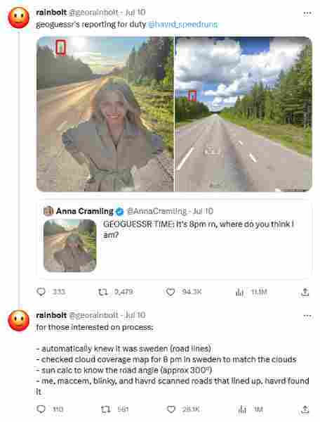

Hi! I moved apartments a few days ago, but I've also been thinking a lot about privacy. If you're interested in staying anonymous on the internet (and the difficulty of doing that), then read on!
A few days ago, I moved into a new apartment with one of my friends. We've been friends for a long time, so I was very excited to be moving in with them. In my previous apartment, I was very antisocial and never wanted to talk with my roommates unless I had to. This had the consequence of preventing me from using the communal kitchen ever, so most of my food was microwaved. As such, I was looking forward to finally learning how to cook on my own in my new apartment, and I've made a few things that turned out very well including broccoli, brown rice, and eggs!
I've been reading Dungeon Meshi, too, which has gotten me even more motivated to cook food. If Senshi believes I should cook nutritious food, then I'll put more effort into doing it. :+)
I've been wondering a lot about my privacy on the internet. I especially want to obscure more details about my personal life on here because I really don't want any employer or important person see my little blog (or even worse, my Twitter account). Who knows what kind of things an associate would say if they saw me bark like a dog online!
One thing you may have noticed is how poor those images above look. They're all noisy and compressed! This is to circumvent image fingerprinting methods employed within camera hardware that could be used to identify me. This is hard to avoid, but adding noise and compression could help. Additionally, all the metadata from the images are scraped with a linux command-line tool.
You may be thining "this is a bit excessive! Nobody would be able to trace something like this back to you!" but think back to that guy on TikTok who got really popular because he could identify the coordinates of places based on an image of it. If a human can do this, why can't an expensive computer with more processing power do the same? Or if they can't do it now, why couldn't they in 20 years?
The compression on this one was more meant to be silly, but then again... is it impossible that this screenshot isn't fingerprinted? A simple example of obvious fingerprinting would be Twitter's UI changing slightly per operating system or browser version for compatibility reasons; knowing this information could drastically narrow down the kinds of people that could have taken this screenshot. We could go deeper and say that the screenshot-taking application embeds some unique noise pattern into each image to make them uniquely identifiable depending on the user who takes them. This could tell you exactly the user who took the image (for instance, if my application was registered with a certain company, then an investigator could ask that company for the identity of the person with this noise pattern), or you could connect different images together to a single origin (if I take a picture of an image with my phone, sell the phone to someone else, and they take innocuous pictures without obscuring their identity, then their carelessness could be linked back to me through that transaction).
This is all extremely unlikely, but not impossible. Even right now, every time you take a picture with an iPhone, a copy is sent to Apple's servers and a hash is made of it. This is currently being used to prevent the sexual exploitation of children, but we have to trust the technology won't be used for other purposes in the future. Imagine if you have a private Twitter account that posts an image that was taken with an iPhone: if a data breach occurs in Apple that causes these image hashes to be released along with the identities of each user who owned their respective images, then a third party could simply compute a hash on the images in your Twitter account and see if they match any hash in the leaked server. This could link your private account to your real name!
So far, I've written about privacy as a motivation to prevent potential employers from learning about my personal life. A real-world equivalent to what I'm writing about is with whistleblowers (an employee who anonymously leaks information about a company they work for) and fingerprinting tactics used to identify them. For example, printers in your company could print tiny yellow dots in certain positions that are unique to each printer so that a whistleblower's leaked printout could identify the printer they used. More recently, Tesla admitted to sending emails with different spacings between words that identify leakers.
A lot of privacy is built on a huge amount of trust. As an example, a VPN is a service which obscures your IP address by acting as a middle-man to fetch data on your behalf: instead of having your computer go to an end server, you instead go through a VPN and have them go to the end server, forwarding any data back to your computer. Most people think this is a great way to hide your identity well enough to pirate things like movies online, but it relies on the trust of the VPN service to keep your information private! For instance, the VPN could simply scan the network activity and watch for piracy websites to be accessed; if any user accesses one, then the service could link together your registration information (or payment information, if you gave it) with whatever websites you accessed, and could relay this information to interested parties. The popular VPN services say they don't do this, but how can we be sure?
Who can say how easily you could identify me in the future. Maybe this whole blog is a mistake, but I'm taking a little gamble in saying it isn't. Ideally, there's so much information on the internet that it's impossible to distinguish me from a small subset of other people, which makes identification unreliable at best. One way to combat this is with lies (e.g., I can form alibis by claiming to be at a conference at one date when my public employer-accessible accounts say I was actually somewhere else, which means any investigator searching for me online would have a low confidence in any conclusion they come to), but these are difficult to maintain.
In any case, the most effective way to enhance your privacy on the internet is to be knowledgeable about how systems work. How can your choices impact you in the future? Every time you upload something, access a website, or show a third party anything, just think about what kind of information could be conveyed. In the future, imagine that computers will be made with infinite processing power and access to the entire breadth of the internet with the singular goal of identifying your footprint online. Currently, imagine ways that systems around you (like yellow dots on printers, receipts of purchase, and spoken words near any Amazon Alexas) could communicate information you wouldn't want anyone else to know.
In one way, this is exciting! It requires you to be knowledgeable about everything around you and everything you use! You need to know every aspect of the internet, of electricity and the limits of their conveyance, and of the path the garbage you throw out takes through the city! It's hard to be anonymous without being extremely intelligent and careful, and luckily for you, anyone can be both of these things with a bit of effort. I'll be investigating more methods of staying anonymous in the future.
-Sophie